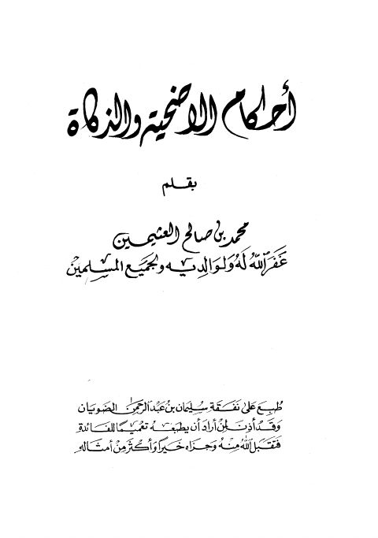

أحكام الأضحية والذكاة
Authors: محمد بن صالح العثيمين
Download Downloads need an internet connection.
- Edition
- 1
- Volumes
- 1
- Pages
- 103
- Type
- كتاب
- Category
- الفقه وأصوله
- Subcategory
- الأطعمة والأشربة
Description
**▫️ العنوان: أحكام الأضحية والذكاة** ▪️ المؤلف: #محمد_بن_صالح_العثيمين ▫️ الطبعة: 1 ▪️ عدد الأجزاء: 1 ▫️ الصفحات: 103 ▪️ نوع الوعاء: #كتاب ▫️ التصنيف الرئيسي: #الفقه_وأصوله ▪️ التصنيف الفرعي: #الأطعمة_والأشربة ۪